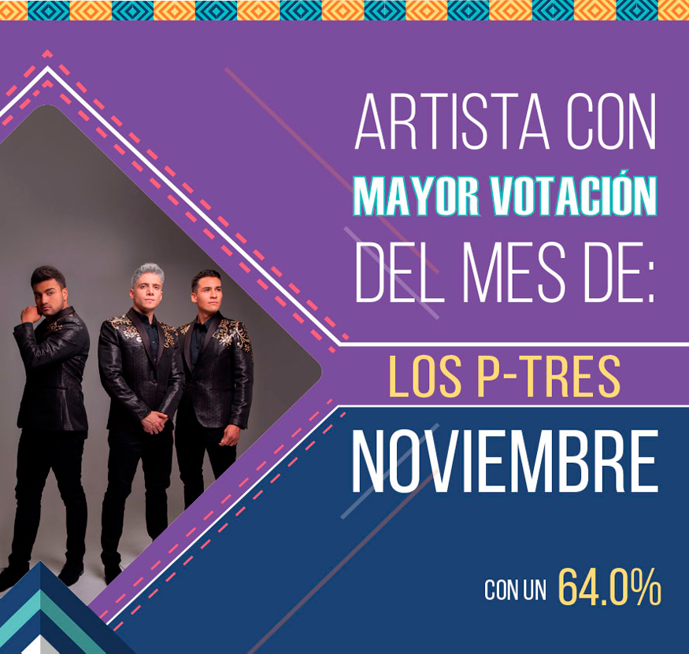
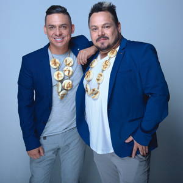

Directorio de Artistas

Alexander González
 |
Es uno de los artistas revelación de la música popular en Colombia. A sus cortos 24 años, tiene un ya sin número de canciones que le cantan al amor y al despecho. El hijo de El Charrito Negro, uno de los más grandes exponentes de la música popular, presenta su más reciente sencillo -Me sobrabas tú- y lo pueden disfrutar en su canal de YouTube. |
Amanda Patricia
{kind=link}
Aragón
 |
"Aragón" su nombre de pila, Víctor Manuel González, un joven de 18 años, hijo de uno de los cantautores más importantes de la música en Colombia, como lo es El Charrito Negro. Inicia en la música desde muy temprana edad y se catapulta como uno de los artistas revelación de la música popular de nuestro país. Hoy presenta su más reciente sencillo #VivoMiVida canción de autoría de su padre El Charrito Negro. |
Banda Fuego Norteño
{kind=link}
Dareska
 |
Daisy Elena Restrepo Cano, más conocida en el mundo artístico como Dareska es una cantante solista de música popular, nacida en el municipio de Itagüí del departamento de Antioquia. Dareska se encuentra potenciando su producto de música popular con canciones como: “Que te piquen caña”, “El Secuestro” ; acompañada del gran artista de música popular Jhon Alex Castaño y su más reciente éxito “El títere”. |
Draco White
{kind=link}
El Yiyo Bohórquez
{kind=link}
Electro Karranga
{kind=link}
Equipaje 11
{kind=link}
Eri Linares
 |
Eri Linares, es una artista que desde temprana edad tuvo cercanía con la música, pero inicia su carrera como solista en el 2018 interpretando canciones de género popular y despecho, y presenta su primer trabajo discográfico “Tremendo varón”, un homenaje a los hombres de hogar, decentes y amorosos. Contacto:Teléfono: 317 6483884 Instagram: @EriLinnares Facebook: Eri.Linnares YouTube: Eri Linares Twitter: @EriLinnares |
Iván Carvajal
 |
Iván Carvajal, cantante y compositor nacido en Solano Caquetá, tiene una larga trayectoria en la música popular colombiana, a sus 26 años lanza su primer sencillo titulado “Pues vete” logrando con este un nuevo formato y ritmo de la música popular éxito que dejará mucha expectativa en las mejores emisoras de radio y canales nacionales de Colombia. Contacto: |
Janfer
{kind=link}
Jeison Pérez
 |
El artista de música popular después de sus éxitos -Me volvieron malo- y -Pueden llorar- junto al “Rey del chupe” Jhon Alex Castaño nos presenta su nuevo éxito -Ella no quiere enamorarse-, tema que promete ser éxito nacional. |
John Jairo Pérez
 |
John Jairo Perez rey de reyes de la trova, humorista y gran interprete de la música parrandera y la parodia. |
John Yara
{kind=link}
Juan Palau
{kind=link}
Julian Daza
{kind=link}
Julián López
 |
El artista Julián López empieza a proyectarse como un artista profesional en el ámbito del género popular colombiano, presentando una propuesta en el video de -El Verbón-; fresca, moderna y de alta calidad a la altura de los grandes del género. Desde ya se prepara para lo que será el año 2019 en su carrera musical. |
Los Cantores Koko y Koronel
|  | Con un recorrido importante como la primera agrupación de parodia del país, Los Cantores Koko y Koronel llegan con una interesante propuesta como lo es -Miguelito-. |
{kind=link}
Mauricio Ceballos
{kind=link}
Olider Montana
 |
Olider Montana, artista de música popular, nacido en San Luis Tolima, reconocido a nivel nacional e internacional con sus éxitos “Caja de madera”, “Pobre y sincero”, “Fue mi error” y “En ti me tatúe”, entre otros, ahora llega con su nueva propuesta musical “Tres engaños”. |
{kind=link}
{kind=link}
{kind=link}